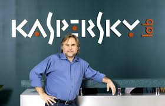

Взгляды на кибербезопасность
Евгений Касперский в течение нескольких лет открыто высказывает опасения по поводу угрозы кибератаки на критически важные объекты инфраструктуры, которая может привести к катастрофическим последствиям. Он поддерживает идею соглашения о нераспространении кибероружия, считая, что мировое сообщество должно положить конец гонке кибервооружений. В ходе своих поездок по всему миру Евгений Касперский регулярно делает доклады об опасностях, которые несут в себе кибервойны, и необходимости противодействовать эскалации киберугроз на глобальном уровне. Он рассматривает просвещение в области кибербезопасности в качестве ключевого условия для успешной борьбы с киберугрозами. Это касается как рядовых пользователей, так и специалистов в области IT-безопасности, которым зачастую не хватает квалификации. Евгений также активно поддерживает идею всеобщей стандартизации и принятия единых политик в области кибербезопасности, а также идею сотрудничества между государственными органами и компаниями, работающими в индустрии IT-безопасности. «Частными компаниями — особенно в IT-индустрии и отраслях, связанных с безопасностью, а также в некоторых стратегически важных отраслях, для которых IT-безопасность является важнейшим приоритетом — накоплен огромный практический опыт борьбы с киберугрозами, который государство могло бы использовать чрезвычайно успешно». Евгений Касперский поддерживает идею использования интернет-паспортов при совершении критических операций в глобальной сети: при голосовании на выборах, работе в системах онлайн-банкинга, получении государственных услуг и т. д. По мнению Касперского, основная уязвимость Интернета — в его анонимности. Поэтому, чтобы сделать всемирную паутину менее уязвимой, следует точно идентифицировать каждого её пользователя. Разрешать подключение к сети Касперский предлагает только после получения специального паспорта и сдачи экзамена, по аналогии с водительскими правами. А для контроля над соблюдением законности в сети следует создать специальную интернет-полицию (интернет-Интерпол). «Все обязаны иметь идентификатор или интернет-паспорт, — сказал Евгений Касперский в интервью изданию ZDNet Asia во время его посещения конференции Интерпола в Сингапуре. — Интернет изначально был разработан не для общественного пользования, а для учёных и военных США. Только потом его представили публике, и это оказалось ошибкой… представлять его так, как это было сделано». При этом Касперский убеждён, что новая система должна быть исключительно принудительной, и ей должны подчиняться все страны. «Если какая-нибудь страна не согласится или проигнорирует соглашение, просто отрубите им Интернет», — сказал он. Предложение уйти от анонимности в Интернете Евгений Касперский высказывает уже в течение нескольких лет, однако только сейчас его идеи привлекли внимание западной прессы. Считает необходимым ввести уголовное наказание за спам. В прессе характеризуется как «гроза компьютерной преступности».
Интернет - это место особой опасности.
Cybersecurity Perspectives
For several years, Eugene Kaspersky has been vocal about his concerns about the threat of a cyberattack on critical infrastructure, which could have catastrophic consequences. He supports the idea of a non-proliferation agreement on cyber weapons, believing that the world community must put an end to the cyber arms race. During his trips around the world, Eugene Kaspersky regularly gives reports on the dangers of cyber warfare and the need to counter the escalation of cyber threats at the global level. He views cybersecurity education as a key condition for successfully combating cyber threats. This applies to both ordinary users and IT security specialists, who often lack the qualifications. Eugene also actively supports the idea of universal standardization and the adoption of uniform cybersecurity policies, as well as the idea of cooperation between government agencies and companies working in the IT security industry. "Private companies - especially in the IT and security industries, as well as in some strategically important industries for which IT security is a top priority - have accumulated a huge amount of practical experience in combating cyber threats, which the state could use extremely successfully." Eugene Kaspersky supports the idea of using Internet passports when performing critical operations on the global network: when voting in elections, working in online banking systems, receiving government services, etc. According to Kaspersky, the main vulnerability of the Internet is its anonymity. Therefore, in order to make the World Wide Web less vulnerable, each of its users should be accurately identified. Kaspersky suggests allowing connection to the network only after receiving a special passport and passing an exam, similar to a driver's license. And to control compliance with the law on the network, a special Internet police (Internet Interpol) should be created. “Everyone has to have an ID or an Internet passport,” Eugene Kaspersky told ZDNet Asia during his visit to the Interpol conference in Singapore. “The Internet was not originally designed for public use, it was designed for scientists and the US military. It was only later that it was introduced to the public, and it was a mistake… to present it the way it was.” At the same time, Kaspersky is convinced that the new system should be strictly mandatory, and all countries should obey it. “If any country does not agree or ignores the agreement, just cut off their Internet,” he said. Eugene Kaspersky has been proposing to move away from anonymity on the Internet for several years, but only now have his ideas attracted the attention of the Western press. He believes it is necessary to introduce criminal penalties for spam. The press describes him as a “threat of computer crime.”
What is cybersecurity?
Cybersecurity (sometimes called computer security) is a set of methods and practices for protecting computers, servers, mobile devices, electronic systems, networks and data from malicious attacks. Cybersecurity has applications in a variety of areas, from business to mobile technology. In this direction, several main categories can be distinguished.